Найважливіше за 30 секунд
- Під час тривоги: натисніть POTWIERDZAM — wycisz syrenę (ACKNOWLEDGE — підтверджую, вимкнути сирену), потім Gdzie się schronić (Where to shelter — де сховатися). GROTA одразу покаже найближче місце і маршрут. Натисніть ВЕСТИ ➜.
- Заздалегідь, спокійно: у вкладці Місця додайте дім, роботу або школу дитини та виберіть для кожного до трьох укриттів. Запитайте управителя будинку, чи і коли вони відчинені.
- На випадок відсутності інтернету: у вкладці Підготовка завантажте мапу свого воєводства (Мапа й маршрути).
- Пам'ятайте: GROTA — це перелік місць, а не гарантія, що вони будуть відчинені. Коли чути сирени або прийшов Alert RCB, дійте за офіційним повідомленням.
Що таке пункти в GROTA
Це 85 837 пунктів укриття з публічного переліку Головного управління PSP («Punkty schronienia w Polsce», dane.gov.pl). Перелік не вказує, чи це сховище, укриття чи тимчасове місце захисту, і скільки людей там поміститься — повний реєстр не є публічним. Зате він вказує, коли пункт доступний, і це видно за кольором крапки:
🟢 Цілодобово
Доступний цілодобово, наприклад підземні переходи, станції метро, частина підземних паркінгів.
🟠 У визначені години
Відчинений, коли будівля працює або є персонал — школа, установа, торговий центр. Годин у даних немає: перевірте заздалегідь.
🔵 На вимогу
Зазвичай зачинений (підвал багатоквартирного будинку, спільний гараж). У разі загрози його відчиняє управитель або мешканці. Запитайте заздалегідь, у кого ключ.
GROTA охоплює усю Польщу і лише Польщу. Перелік пунктів зберігається в телефоні, тому пошук найближчого працює й без інтернету.
1. Як відкрити GROTA
Під час тривоги: на екрані тривоги натисніть POTWIERDZAM — wycisz syrenę (підтверджую, вимкнути сирену). Сирена замовкне, і з'являться три кнопки: Gdzie się schronić (де сховатися), Obserwuj mapę (стежити за мапою) і Jestem bezpieczny (я в безпеці). Strażnik ніколи сам не перемикає екран — вибираєте ви. Gdzie się schronić відкриває GROTA одразу на вкладці ЗАРАЗ і визначає вашу позицію. GROTA починає завантажуватися вже в момент тривоги, тому відкривається миттєво.
Будь-коли: нижня вкладка Więcej (More — більше) → Schronienie — gdzie najbliżej (Shelter — nearest — найближче укриття). Відкриється вкладка Мапа.
Повернення до Strażnik: кнопка ‹ Strażnik угорі ліворуч або системна кнопка «назад». «Назад» спершу скасовує крок у GROTA (закриває картку пункту чи панель), а вже потім повертає до Strażnik.
Унизу GROTA має п'ять вкладок: Мапа, Місця, червону ЗАРАЗ, Підготовка і Правила.
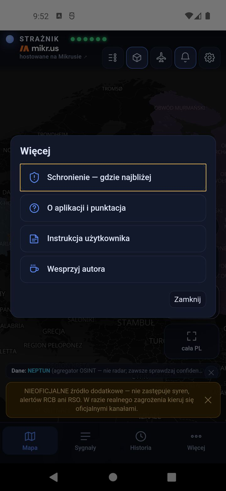
2. Під час тривоги — вкладка ЗАРАЗ
ЗАРАЗ — екран на момент небезпеки. Після відкриття він визначає вашу позицію і одразу показує результат. Нічого налаштовувати не треба.
Крок 1. Звідки шукаю
Під цитатою з «Порадника безпеки» видно «Шукаю від: GPS ±5 м» — звідки GROTA рахує відстань. Якщо позиція неправильна або GPS не працює: Позиція з GPS (спробувати ще раз), Ввести адресу або Я в: Дім (ваше збережене місце). Нижче виберіть, як пересуваєтеся: Пішки, Велосипед або Автомобіль. Завершити очищає позицію і маршрут.
Крок 2. Найближче місце і маршрут
Велика картка «Найближче перевірене укриття» показує адресу, відстань, час і вид доступу. На мапі — маршрут від «Ви тут» до мети. ВЕСТИ ➜ відкриває навігацію Google Maps. Нижче — знімок згори (пункт у центрі), Street View і Показати на мапі.
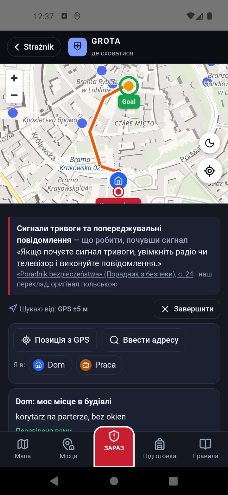
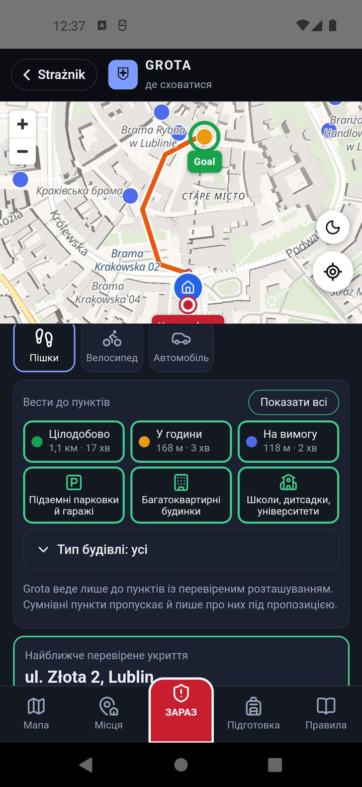
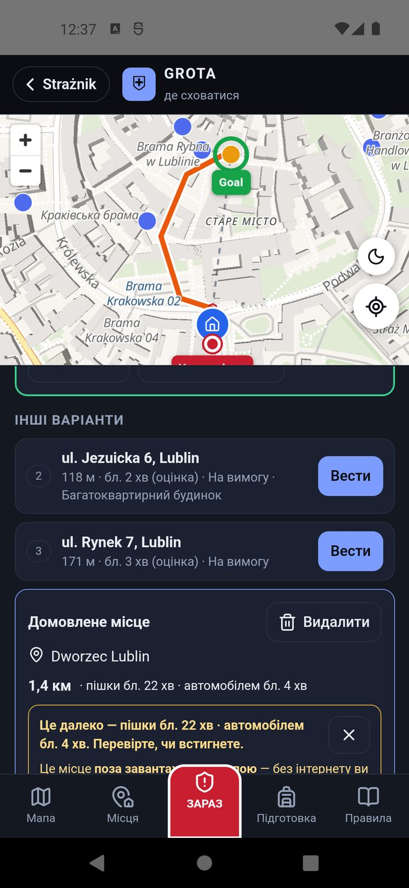
Крок 3. Коли перша пропозиція не підходить
«Вести до пунктів» показує, як далеко найближчий пункт кожного виду — наприклад «Цілодобово 1,1 км», «На вимогу 118 м». Вимкніть вид, який вам не підходить (наприклад, зачинені вночі пункти «на вимогу»), і GROTA одразу вкаже найближчий з решти. Так само працюють швидкі кнопки типів будівель (підземні паркінги, багатоквартирні будинки, школи) і Тип будівлі: усі.
Нижче, в «Інші варіанти», — наступні пункти з номерами 2, 3… Натискання ставить пункт на перше місце з маршрутом. Знадобиться, коли перший — за жвавою вулицею або виявився зачиненим.
GROTA веде лише до пунктів з перевіреним розташуванням. Якщо ближче є пункт із сумнівним розташуванням (шпилька на газоні, а не на будівлі), GROTA пише про нього під пропозицією, але не веде до нього.
Чи встигну? — тривога з часом
Коли Strażnik знає час до загрози (наприклад, об'єкт летить у бік вашого воєводства), GROTA порівнює його з часом дороги. Якщо за оцінкою ви не встигаєте, з'являється «За оцінкою ви не встигнете», а маршрут стає червоним. Тоді дійте за порадами з «Порадника безпеки», які показано поруч: залишайтеся в будівлі, подалі від вікон, біля несучих стін, на найнижчому поверсі.
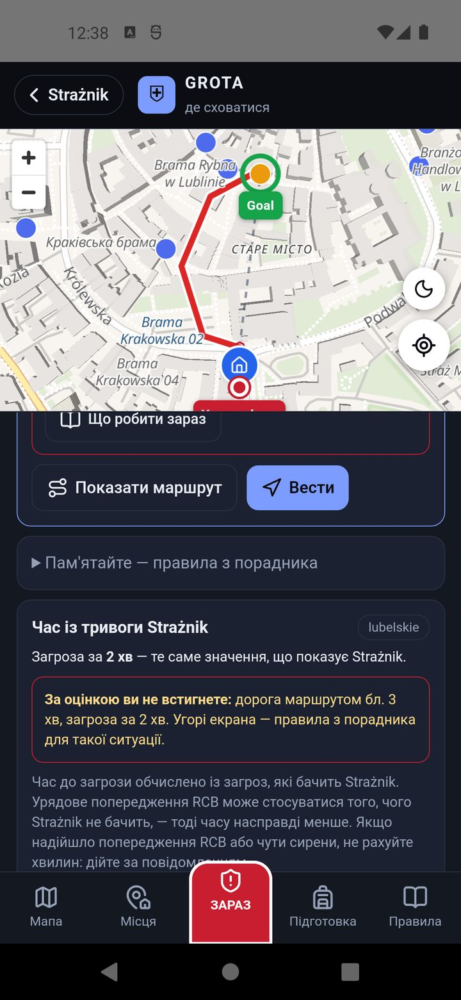
| Колір маршруту | Що означає |
|---|---|
| зелений | за оцінкою встигнете |
| червоний | за оцінкою не встигнете |
| фіолетовий, бірюзовий, синій | пішки, велосипедом, автомобілем — без порівняння з часом (немає тривоги або Strażnik не знає часу) |
| помаранчевий | ваш записаний маршрут (розділ 5) |
| пунктирна пряма | лише напрямок, по прямій |
Коли GPS не працює, неточний або показує іншу країну
- Визначення позиції триває: не чекайте — натисніть Я в: Дім, введіть адресу або Вказати на мапі.
- Немає дозволу на геолокацію: GROTA підкаже, де його ввімкнути (Налаштування → Застосунки → Strażnik → Дозволи → Геодані); доти ви вибираєте місце вручну.
- Дуже приблизна позиція (наприклад ±3 км): GROTA запитає, чи вибрати місце, чи Усе одно показати, і позначить результат як приблизний.
- Поза Польщею: GROTA знає лише пункти в Польщі, тому замість маршруту пише «Ви поза зоною даних Grota.». Якщо ви в Польщі біля самого кордону, а телефон показав інший берег річки, вкажіть позицію вручну.
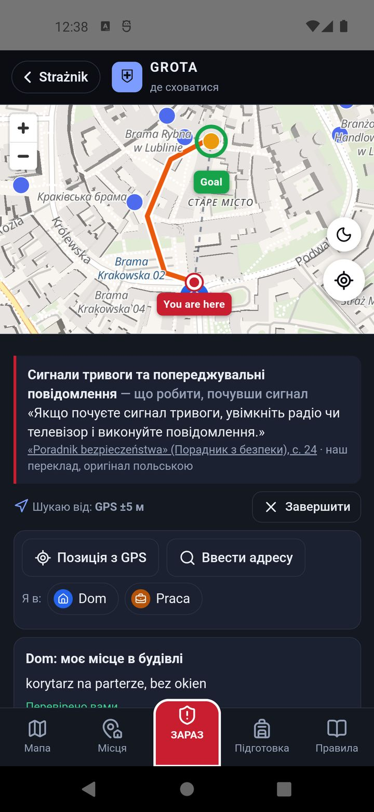
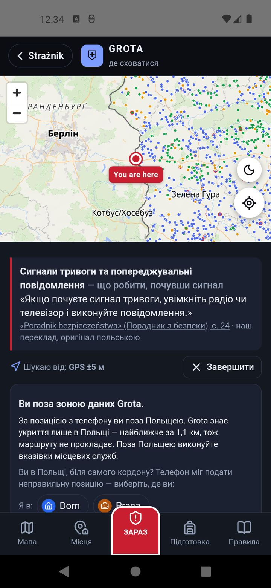
Коли ВЕСТИ нічого не робить (немає Google Maps або інтернету): на картці пункту натисніть Накреслити маршрут тут, на мапі Grota. GROTA накреслить орієнтовний маршрут з того, що є в телефоні, — вулицями з офлайн-мапою, без неї по прямій.
3. Домовлене місце
Якщо ви домовилися з близькими про конкретне місце зустрічі, введіть його в картці «Домовлене місце» внизу ЗАРАЗ: Вказати місце → адреса або точка на мапі. GROTA покаже відстань і час пішки й автомобілем, маршрут (Показати маршрут, Вести) і попередить, якщо місце задалеко, щоб устигнути. Видалити прибирає його.
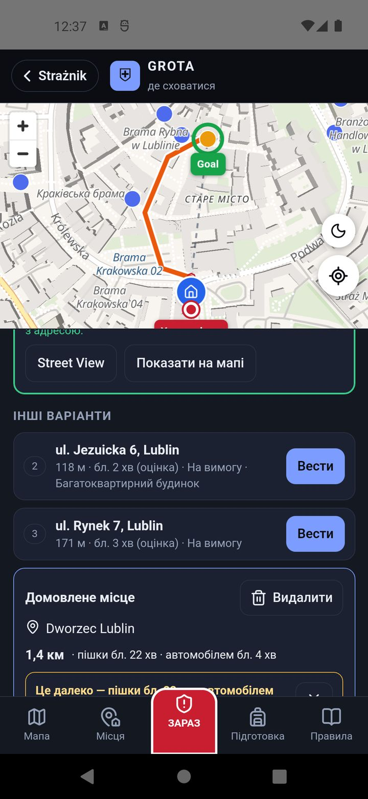
4. Вкладка Мапа
Мапа показує всі пункти в Польщі. Колір крапки — доступ (зелений — цілодобово, помаранчевий — у визначені години, синій — на вимогу), а обведення — наскільки певне розташування (сіре — перевірене, жовте — перевірити, червоне — сумнівне). Кнопки на мапі: +/− масштаб, місяць/сонце перемикає світлу й темну мапу, приціл показує вашу позицію.
Торкніться крапки — під мапою з'явиться картка пункту: адреса, гміна, тип будівлі (з OpenStreetMap), доступ з поясненням, відстань і час, певність розташування, знімок згори, Вести, Street View і Накреслити маршрут тут, на мапі Grota. Якщо у вас є збережені місця, побачите також «Зберегти як укриття для:» з кнопками ваших місць.
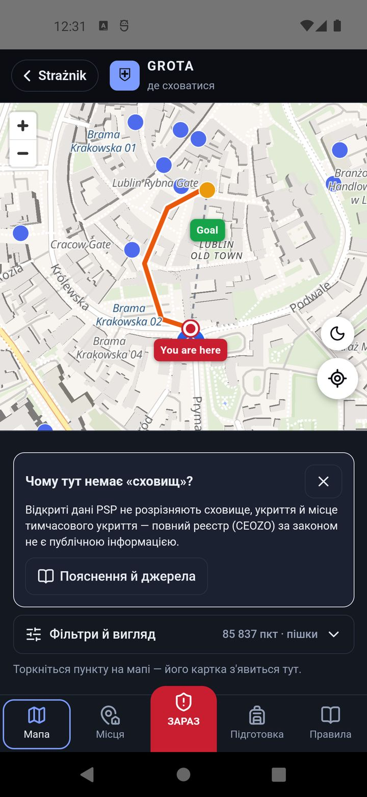
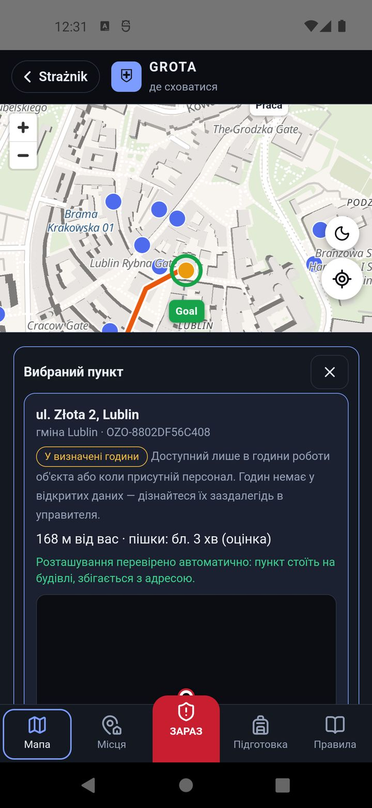
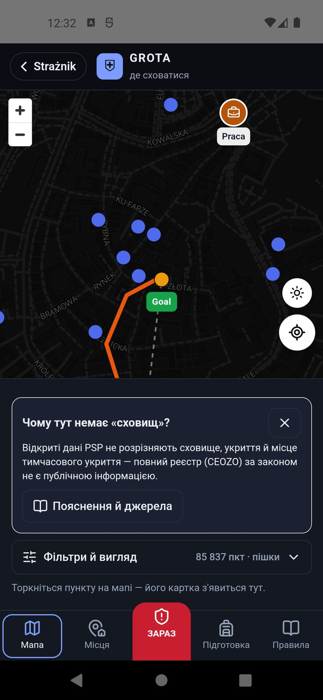
Фільтри й вигляд
Фільтри й вигляд під мапою дозволяє показати лише вибрані пункти: за доступом (Цілодобово, У години, На вимогу), за певністю розташування (Перевірені, Перевірити, Сумнівні) і за типом будівлі (11 груп, наприклад підземні паркінги, багатоквартирні будинки, школи, лікарні). Кожна кнопка вмикає або вимикає свою групу; Показати всі позначає все, а натиснута ще раз — знімає позначки. Тут також вибираєте Пішки, Велосипед або Автомобіль.
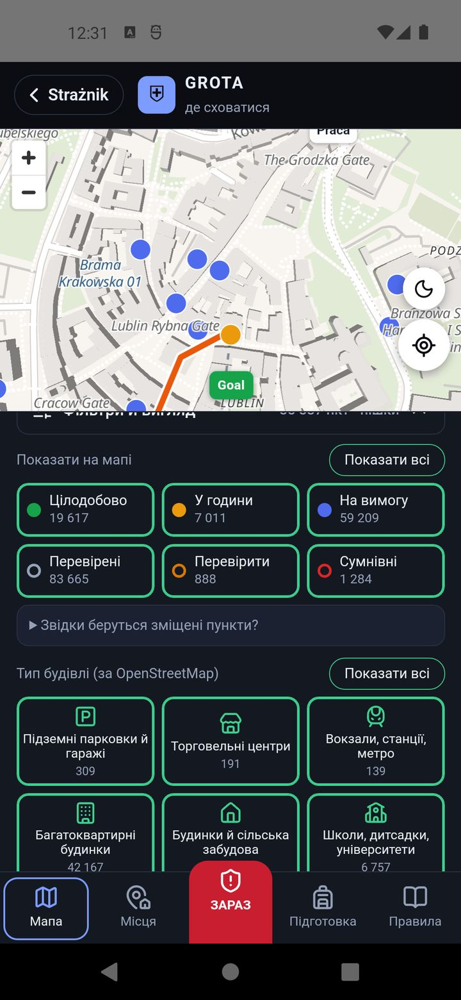
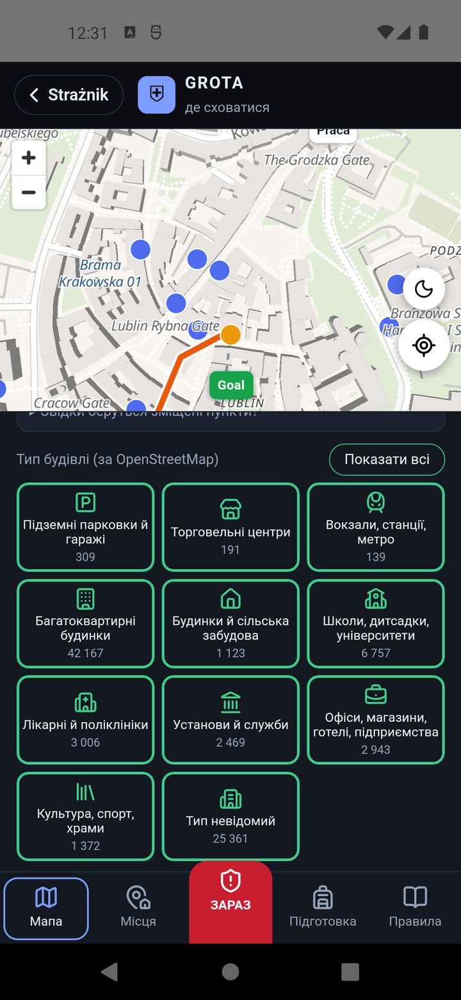
Чому тут немає «сховищ»? Під час першого відкриття GROTA пояснює, що публічні дані PSP не розрізняють сховище, укриття і тимчасове місце захисту, а повний реєстр за законом не є публічним. Пояснення й джерела веде до Правил.
5. Вкладка Місця — підготуйтеся заздалегідь
Тут ви зберігаєте свої постійні місця — дім, роботу, школу дитини, родину — і заздалегідь вибираєте для них укриття. Під час тривоги досить натиснути Я в: Дім — і результат одразу, навіть без GPS. Місця зберігаються лише в цьому телефоні.
Додавання місця
- У «Додати місце» виберіть вид: Дім, Робота, Школа / університет, Дитсадок / ясла, Родина / близькі, Дача / будиночок або Інше.
- Введіть назву й адресу, потім Шукати — або Моя позиція / Вказати на мапі.
- Торкніться плитки місця і в «Виберіть укриття» позначте до трьох пунктів зі списку найближчих.
Подробиці, нотатки й редагування
У подробицях місця видно розташування, «Моє місце в будівлі» (наприклад «коридор на першому поверсі, без вікон» — де сховатися, якщо не встигнете вийти) і вибрані укриття. Біля кожного укриття є поле «Як увійти — години, хто відчиняє, контакт управителя (ваша нотатка)». Його варто заповнити після розмови з управителем. Олівець відкриває редагування: назва, розташування, вид, ваше місце в будівлі з прапорцем «Я перевірив це місце на місці», короткий список підготовки і спосіб пересування. Зміни зберігаються самі. Кошик видаляє місце, а ручка ⋮⋮ змінює порядок.
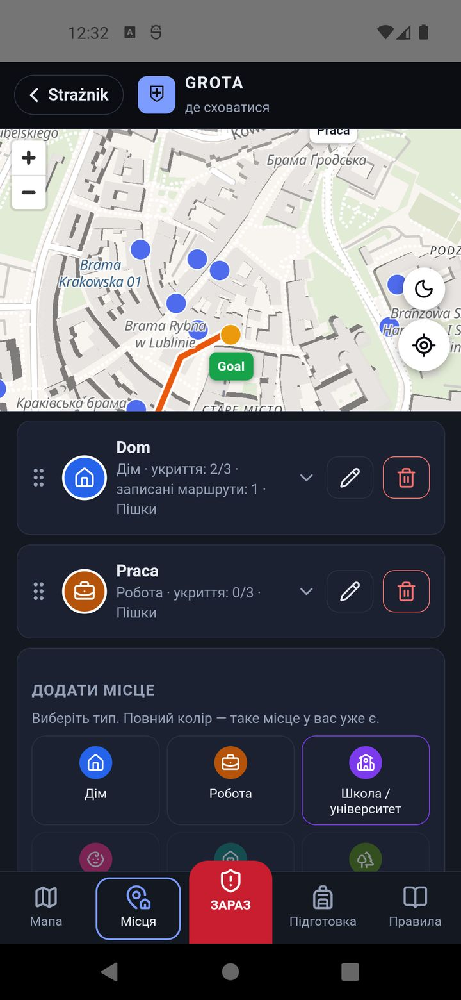
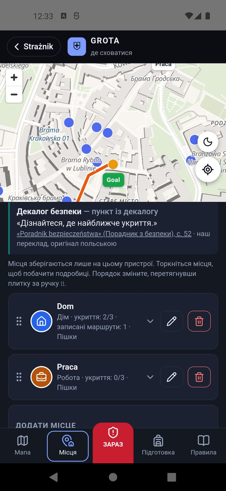
Запишіть свій маршрут
Для кожного укриття можна записати маршрут, пройшовши його один раз спокійно: Записати свій маршрут, ідіть, а наприкінці Завершити й зберегти. Під час запису екран має бути ввімкнений. Під час тривоги, коли ви не далі ніж за 300 м від цього місця, GROTA покаже ваш помаранчевий маршрут замість обчисленого — з проходами і скороченнями, яких немає на мапі.
6. Вкладка Підготовка
Офлайн-мапа — на випадок відсутності інтернету
Під час тривоги мережа буває перевантажена. Пункти укриття й відстані працюють завжди, бо перелік є в телефоні. Щоб бачити вулиці й мати маршрут без інтернету, завантажте мапу заздалегідь:
- Виберіть район: Навколо місця (25, 50 або 75 км навколо вашої позиції чи збереженого місця), Воєводство або Уся Польща (близько 2 ГБ — лише через Wi-Fi).
- Виберіть, що завантажити: Мапа й маршрути (рекомендовано; лише з цим варіантом GROTA поведе без інтернету і в селі) або Лише мапа (менше, але без інтернету замість маршруту буде пряма лінія).
- Натисніть Завантажити мапу. GROTA заздалегідь показує, скільки завантажить і скільки місця займе. Не закривайте застосунок під час завантаження; перерване завантаження потім докачує лише решту.
- Перевірити без інтернету імітує відсутність мережі, щоб ви побачили, що працюватиме. Завершити тест повертає звичайну роботу.

{kind=link}
{kind=link}
{kind=link}
{kind=link}
{kind=link}
{kind=link}
{kind=link}
{kind=link}
{kind=link}
{kind=link}
{kind=link}
{kind=link}
{kind=link}
{kind=link}
{kind=link}
{kind=link}
{kind=link}
{kind=link}
{kind=link}
{kind=link}
{kind=link}
{kind=link}
Розміри: воєводство — від кількох десятків до кількох сотень МБ (точне число показує список), уся Польща — близько 2 ГБ. Завантажену мапу видаляєте кнопкою Видалити в тій самій картці. Офлайн-мапа — це ще й місце для інших: кожен, хто має її в телефоні, не навантажує сервер під час тривоги.
Списки підготовки
Нижче — 8 списків, процитованих з «Порадника безпеки» та «Інструкції реагування» МВС Польщі: Підвал або гараж — перевірте, перш ніж там сховатися, Будинок або квартира, Домашні запаси щонайменше на 3 дні, Тривожний рюкзак, План на випадок кризи, Робота, Школа і Люди, які потребують особливої допомоги — разом 44 пункти. Список про підвал і гараж новий у випуску 1.7.80: це цитати з «Інструкції реагування» МВС Польщі (с. 8–10). Відкрити розгортає список; позначайте, що вже маєте. Рамка списку червона, коли зроблено менше 40 %, жовта в процесі і зелена, коли все готово. Прогрес зберігається лише в телефоні.
{kind=link}
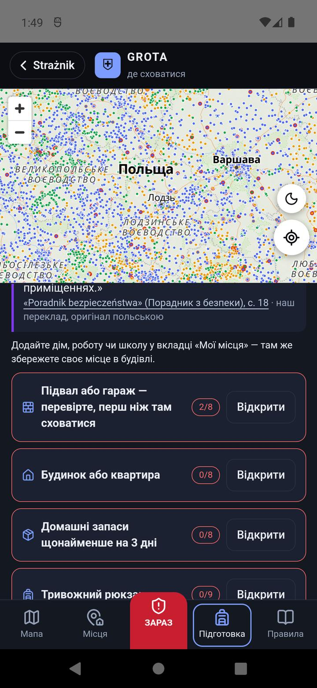
{kind=link}
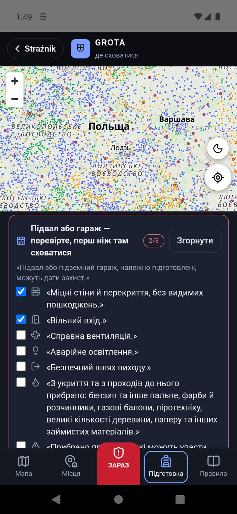
7. Вкладка Правила
GROTA не створює власних процедур. Кожна порада у вкладці Правила — цитата з польського урядового «Порадника безпеки» («Poradnik bezpieczeństwa», 1/2025) з номером сторінки: що робити, почувши сигнал тривоги, повітряна атака, укриття (що робити, якщо не встигаєте), евакуація, підготовка оточення і план на випадок кризи. Від випуску 1.7.80 є також окремий розділ «Інструкція реагування МВС Польщі» — цитати з матеріалу МВС Польщі та Державної пожежної служби від 25 вересня 2026 року: як вибрати приміщення, правило двох стін, коли не спускатися в підвал і де стати в підземному гаражі. Далі пояснення: чого порадник не визначає, чому в GROTA немає «сховищ», наскільки свіжі пункти (дата реєстру PSP і їх кількість, взяті прямо з пакета даних), обмеження даних, звідки беруться зміщені пункти, і джерела. Закрити повертає до попередньої вкладки.
{kind=link}
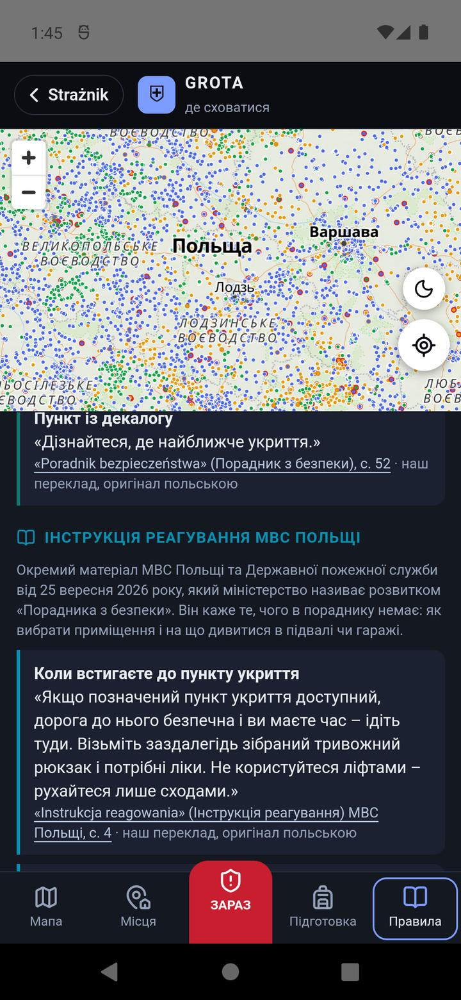
{kind=link}
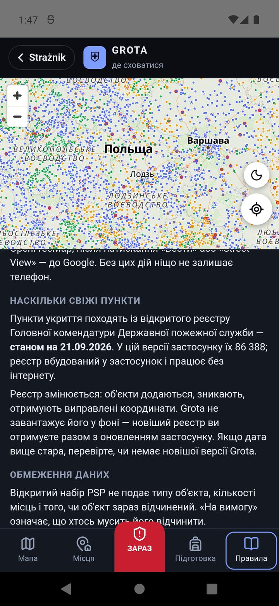
8. Мова GROTA
GROTA працює українською, англійською та польською. Мову вона вибирає в такому порядку:
- мова, вибрана в GROTA: Правила → картка «Język · Language · Мова» → Polski, English або Українська;
- якщо не вибрано — мова Strażnik (⚙ → Aplikacja → мова: польська або англійська);
- якщо й цього не налаштовано — мова телефону: українська дає українську, будь-яка інша, крім польської, — англійську.
Зміна діє одразу, без перезапуску. Цитати з «Порадника безпеки» українською — наш переклад; під кожною є примітка, що оригінал польською. Адреси й назви місць залишаються польською, як у переліку PSP. Сам Strażnik (поза GROTA) має польську й англійську версії.
{kind=link}
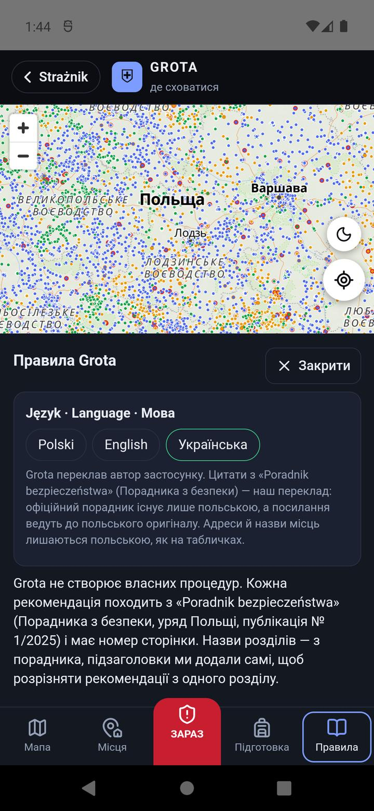
9. Що працює без інтернету
| Функція | Без інтернету |
|---|---|
| Пункти укриття, найближчий пункт, відстань | працює завжди |
| Мої місця, нотатки, записані маршрути, списки підготовки | працює завжди |
| Мапа з вулицями | лише після завантаження офлайн-мапи |
| Маршрут дорогами | лише із завантаженим варіантом Мапа й маршрути; інакше пряма лінія |
| Пошук адреси | знає лише населені пункти (позиція — центр населеного пункту) |
| ВЕСТИ (Google Maps), Street View, знімок згори | не працює |
10. Питання і проблеми
Це сховища?
Невідомо. Публічний перелік PSP не розрізняє сховище, укриття і тимчасове місце захисту, а повний реєстр не є публічним.
Чи буде пункт відчинений?
GROTA цього не знає. Пункти «на вимогу» зазвичай зачинені, а «у визначені години» — відчинені лише під час роботи будівлі. Запитайте управителя будинку заздалегідь і запишіть відповідь у нотатці «Як увійти» біля свого місця.
Чому GROTA веде до дальшого пункту, а не до найближчої крапки?
Ближча крапка має сумнівне розташування (шпилька біля будівлі) або не відповідає вибраному виду. GROTA пише про це під пропозицією.
Шпилька стоїть на газоні або на парковці.
Це помилка у вихідних даних PSP, а не в GROTA. Шукайте будівлю поруч. Помилку можна повідомити гміні або пожежній службі — виправлення в джерелі виправляє її в усіх застосунках.
ВЕСТИ нічого не робить.
Немає Google Maps або інтернету. Скористайтеся кнопкою Накреслити маршрут тут, на мапі Grota на картці пункту.
Знімок згори довго вантажиться або не з'являється.
Він завантажується наживо з Геопорталу GUGiK, який буває повільним — іноді понад десять секунд. Без інтернету знімка немає. У версії 1.7.68 він не з'являвся зовсім; з 1.7.70 працює, також на старших телефонах з Android — оновіть застосунок.
Звідки GROTA знає, скільки в мене часу? Чому іноді немає «встигнете / не встигнете»?
З тривоги Strażnik — із загроз, які Strażnik бачить. Коли тривога спирається лише на непрямі джерела або Strażnik не знає часу, GROTA не оцінює і не підганяє. Alert RCB може стосуватися того, чого Strażnik не бачить, тож при Alert RCB або сиренах не рахуйте хвилин.
Я за кордоном або біля кордону.
GROTA знає лише Польщу. Біля кордону, якщо телефон показав інший берег річки, вкажіть позицію вручну.
Я змінив адресу дому, і укриття зникли.
Так задумано: після зміни адреси більш ніж на 3 км GROTA запитує, чи видалити укриття зі старого району.
У мене новий телефон — де мої місця?
Місця, нотатки й маршрути зберігаються лише в телефоні, де ви їх записали. На новому додайте їх знову.
Як видалити все?
Офлайн-мапу — в Підготовка → Видалити, місця — кошиком у Місця, домовлене місце — Видалити. Усе разом: Налаштування Android → Застосунки → Strażnik → Пам'ять → Очистити дані (це очищає також налаштування Strażnik, наприклад воєводство для тривог).
Коли GROTA буде на iPhone?
У наступному випуску, після перевірки Apple. На вебсайті GROTA не буде: перелік пунктів — це понад десять МБ даних, які мають сенс у телефоні.
11. Приватність і джерела
GROTA не має облікового запису, реклами чи аналітики. Перелік пунктів і пошук найближчого працюють у телефоні. Місця, нотатки, записані маршрути, списки й офлайн-мапа залишаються в телефоні. За межі телефону йде лише те, що потрібно конкретній функції:
- маршрут на мапі — ваша позиція і вибраний пункт ідуть на публічний сервер маршрутів FOSSGIS (OSRM, дані OpenStreetMap);
- пошук адреси — введена адреса йде до сервісу GUGiK після натискання «Шукати»;
- знімок згори — фрагмент ортофотомапи з Геопорталу (GUGiK) для пункту, який ви переглядаєте;
- основа мапи — плитки OpenFreeMap для району, який ви переглядаєте (з офлайн-мапою нічого не надсилається);
- пакети офлайн-мапи — завантажуються із сервера Strażnik;
- Google Maps і Street View — лише після натискання кнопки.
Подробиці: політика приватності (англійською).
Дані: Головне управління PSP, «Punkty schronienia w Polsce», dane.gov.pl, CC BY 4.0 · типи будівель: © OpenStreetMap (ODbL) · правила і списки: «Poradnik bezpieczeństwa», уряд Польщі, gov.pl, CC BY-SA 4.0 (наш переклад) · мапа: OpenFreeMap, © OpenStreetMap · маршрути: FOSSGIS (OSRM) · адреси й ортофотомапа: GUGiK.